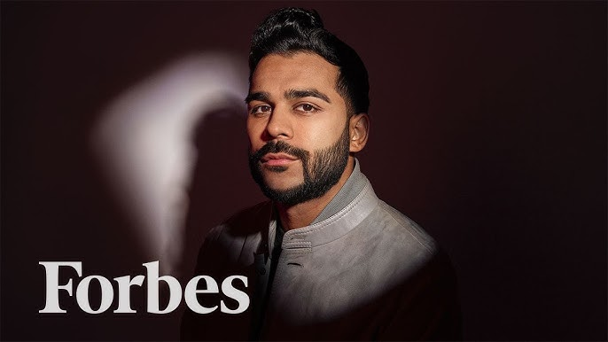
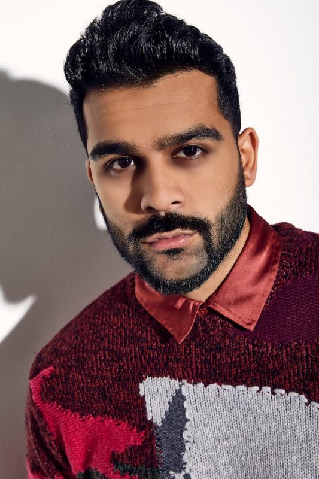

Adam Waheed (55 Million Total Followers, 28 Million Instagram Followers) USC Content Creator Talk
On November 15th, 2023, Adam Waheed - a massive short-form comedy creator with over 28 Million+ Instagram Followers and 55 Million+ Total Followers - came to speak to a group of content creators at USC to give his story and advice for being successful.
 Introduction, Adam's Rags To Riches Story
For his talk, Adam dived into his background and story (which I'll outline in this section) before spending the majority of the time on Q&A with everyone that was there.
First, he talked about how he got to the poine where he's currently at (millions of followers, millions of dollars).
As of the time of this talk, it took him 8 years to get to where he was. He started on vine but then later transitioned to Instagram.
He wanted to become an actor so he decided to move to LA. After he moved to LA, he was broke as heck and didn't even know many of the basics of content creation, but he decided to give it a try, too.
He googled how to shoot, how to edit, and at first, it took him months to make 30 second videos.
At first, when he did start getting consistent, he got only ~90 views on his videos for months.
But then one day, one of his videos popped off and his ~400,000 views and went viral, after which he kept repeating that performance and his profile his a tipping point.
Adam's Mindset
A key thing he mentioned at this point in his talk was something along the lines of that his mindset was that he "would do as many videos as needed (as many as it took)" to get to the point of making it. That he would continue, no matter what, until it worked.
To Get There, He Studied Other People's Videos
Much like Steven He would say in his Fall 2025 USC Talk two years later, Adam mentioned that he studied other creators' videos constantly as a means of getting better, especially early on.
Studying other creators was a CRUCIAL part of his success, so make sure to do that.
How Quickly He Made Money
He mentioned that he made ZERO money in the first 6 months, then things grew exponentially from there, with him becoming a millionaire in a year and a multimillionaire shortly thereafter.
It's Not Too Late To Be A Creator
Contrary to many of our beliefs at the time, Adam emphasized that he believed that it's NOT too late to become a creator. Whether it's too late or people asking if they missed their chance is the number one question he gets.
The best time to become a creator is today.
There's so many options these days - longform, shortform, multiple platforms, a ton of resources, and a bunch of different ways to make money.
You Must Be Obsessed
While Adam likely didn't use the exact word "obsessed" like Steven He did in his later USC talk, he drove home lessons which are very similar to Steven's lesson about obsession.
He mentioned that you "have to bust your ass every single day if you REALLY want this."
That's what it takes to be a top creator.
And even today, he still works just as hard or harder as he did when he first started.
He also thought it was really cool that we had this content creator community at USC and didn't know that we existed, but told us to definitely take advantage of it.
Q&A
How does he stay consistent with his content?
Adam mentioned to always create content that you're passionate about - that this is a good way to avoid burnout.
He TRULY loves making comedy and making people laugh.
but despite that, there are still hard days after years of doing it where he has to push through things, but he's still very passionate about it overall.
Question on Shadowbanning - is it real?
Adam joked that "now we're getting to the REAL questions" which made the whole room laugh.
He mentioned that he thinks that it can be a thing, but only if it's like obvious violations of rules etc.
OR sometimes it could be other stuff like you haven't posted in a while.
How to avoid people getting bored of your content (as a creator)?
Adam - Just because something's working now doesn't mean it will work later.
Or better said, just because something worked before doesn't mean it will work now.
(especially in social media)
He also mentioned one specific strategy which is (if he posts ~4 videos a week for example), posting your most viral videos or viral-trend videos at the beginning and end of the week, and sandwiching the two "mid" videos in the middle, creating a "virality sandwich" which makes it harder for the algorithm to detect your "mid" videos and also lifts up their view counts at the same time.
Adam - Two Ways To Be A Creator (One Good, One BAD)
In his opinion, there's two types of creators (generally):
1) They Sell Themselves
- People aren't following them for their content, but instead for more superficial things such as their looks, etc.
- For the most part, Adam thinks that these types of crearors often die out and that it's a horrible way to be a creator
- They have to often have to be involved in drama etc. in order to stay relevant (e.g. Bryce Hall)
2) They Sell Something or Create Content
- E.g. a creaor that sells content
- You'll forever be able to grow
- The name of the game for this is to continue growing followers (or I imagine revenue, leads, etc.)
- He thinks that this is the much better route to take
- "Theoretically you can live online forever this way."
- He said that even he's one of these
- He thinks of serving his new followers constantly
Overall, Adam thought that there's two primary types of creators, and that's either selling yourself or selling the content, of which he highly recommends and prefers the latter.
Collaborating w/Bigger Creators, Etiquette + Approach
Make sure you have the right professionalism & etiquette when working with larger creators - you do NOT want to step on anyone's toes or anything.
First of all, make sure you're happy to be there and make it known. And even if you're not, fake it til you make it.
Make sure to HELP people as much as you can. Always be in that service/value mindset.
ANYTIME you meet up with anybody, if you can provide value, and be likeable at the same time, then you'll always be welcome.
Be so nice and valuable to people that they can as YOU, if they want people in a video or want to know anything.
Anytime you're in any room - Provide value, be nice, crack jokes, be likeable, and people will want you around.
With bigger creators, it's a matter of "get your toe in the door and then your whole body after."
What Adam HATES most - especially these days - is when people "ask, ask, ask" him (for stuff) now, which he REALLY doesn't like. It's a complete turn-off to him.
It's a complete turn-off when you can feel the desperation with them.
Again, instead of being that, always be in the mindset of giving value, being likeable, and being in a happy mindset, especially in rooms like that.
Brand Deal Negotiation + How To Pick a Good Management Team
From my notes, it appears that Adam's manager was also present based on my notes from the answer which appear to be an answer from her.
Adam's manager does NOT believe in contracts - at least the 3-year talent signed contracts, for example.
All of Adam's deals are made by her (management) company.
But for smaller creators, she did suggest that she likes the approach of having a fake name / manager when you negotiate your own brand deals.
Make sure to define the scope and fee.
And always make sure to think about how to add more value, produce more value.
Each deal is so dependent on variables, so each can vary.
But in negotiations, EVERY WORD MATTERS! Check every word in the contract.
How To Pitch Ourselves?
It appeared that Adam's manager answered this question too, based on my notes.
She mentioned that we should identify our passion points and put them in our bios.
Try to dig deeper and say what you're trying ot achieve.
What are you looking ot do? What's your true desire? Do you have a burning passion?
When she's on the phone with brands and companies, she knows Adam SUPER WELL so she can also pitch him very good too.
You can phrase it something along the lines of "this is what I've accomplished, these are my goals, and this is how I'll get there."
However, she mentioned that "sometimes you have to get burned so that you can learn" with this type of stuff.
Also in every email or piece of outreach, you can also say something along the lines of "I'd love to help you!"
Make sure that you offer value in every email that you have. Have that mindset and convey it. Value. How do you offer value to someone?
Adam's Advice on Executing Brand Deals, Brand Deal Mindsets
Adam: When you get a brand deal, put ALL of your energy and effort into it!!!!
It's your resume.
You want the brand to say "holy shit! He(/she) did such a good job in the video. Let's keep him in mind for future collaborations."
Make sure to REALLY PUT IN THE EFFORT in brand deals.
You DON'T want to provide such a bad experience that the brand essentially says "f--- this person!"
Make sure you put a lot into the production, effort, concept of the video.
And when making it, put yourself in the shoes of the brand and their headspace.
And ALWAYS overdeliver!!!!
Even in small ways, such as -- if the contract says 3 story frames for example, do more than 3!
And always overcommunicate, and go above and beyond since they'll give you more!
Even if you don't get the rate you want, make a video!
If that's the case, you could say something along the lines of "Hey, this isn't my typical rate, but I'll do this to build future relationships..."
How Far In Advance Does He Plan (His Content)?
In a perfect world, he does 4-5 videos ahead.
Sometime she films the morning of though.
He HIGHLY recommends having a posting schedule in order to hold yourself accountable.
He thinks that not posting, or not posting consistently either, is like "expecting full time pay for part time work (and without consistent work)" - don't be entitled. Post consistently! (act like a professional, as Steven He put it!)
Princple: Constantly Add Value For The People Coming To Watch Your Content
This should go without saying but Adam explicitly called this out as being extremely important.
Question About Choosing Lifestyle vs Comedy Niche?
Adam said that there's SO MANY brands out there.
And that there's opportunities for any vertical or niche.
just focus on what you like!
Do Brands Care More About My Views or Followers?
Adam said to send brands all of your data and analytics.
Hone in on what they're getting from both a content perspective and from a theoretical perspective.
Brands are so crazed by the amount of influencers today.
This is what they're doing, this is the category, and this is why they're disrupting the market.
My Question: Analyzing Videos - How Do you Analyze A Video?
This was my question to Adam during the Q&A Segment - and Adam's answer was EXTREMELY valuable.
In his opinion, almost every viral video has the following viral structure:
1) Relatability
2/3) Conflict, and Resolution
The conflict could be something that people wonder abou.
Every video needs it. (and come to think of it, it's kinda like Key & Peele's advice where you need a character that "embraces what makes them a loser" and tried to get away with something - and that uplifting scenes on the other hand aren't funny, in sketch comedy)
I also mentioned that (back then), I wasn't funny at all, so how the heck was I supposed to take advantage of this structure?
He said that this viral structure makes you go viral everytime.
Even if you're not funny - with LawByMike or whoever that consistently viral lawyer is being a great example in his opinion.
Review of the structure:
At the end of his answer, Adam laid it out again since it's so important:
1) Make it relatable - You do this by building it into the hook. This is super important! People will click away or NOT be captured if it's not relatable, whether it's the topic or the hook itself.
2) Have a Conflict
3) Have a resolution - But obviously save this for the end.
Summary
Overall, Adam gave a lot of actionable tips for aspiring creators which are immediately and practically useful and applicable, and now that I've finally organized my notes over two years after the talk, I look forward to putting all of this into action!
On a personal note, hopefully going back and reviewing all of my notes from these creator talks and organizing them will jumpstart and unlock an entirely different level of my creator/entrepreneurial career that my Astronautical Engineering PhD Screening exam did when I had to go back and review and memorize all of my Astronautical Engineering core classes for that exam in order to pass without any notes or equations sheets etc.
i've sort of been mediocre for a while, but I'm excited to finally take the leap to the next level!